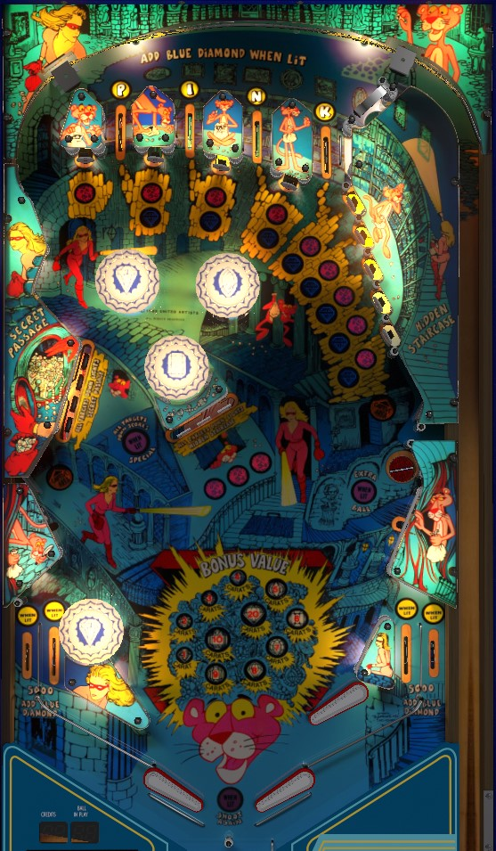

Complete the left drop targets to light the left lock, and the center drop targets to light the right lock. Lock 2 balls to start multiball. In multiball, any standup target or left drop target awards a blue diamond, worth 1 bonus advance, and collecting more than the displayed Total to Beat awards a special. In single ball play, hitting a standup target cycles it through unlit -> pink -> blue -> pink+blue; hit a blue target for a bonus advance, hit a pink+blue target to collect the current base bonus (no multiplier), and each pink+blue target acts as one bonus multiplier when the ball drains.
The four top lanes each award a letter in the word Pink. Roll through a lit lane to unlight it. Lit lanes score 5,000 points, instantly light one standup target blue, and also light the corresponding in/out lane (P lights left out lane, I lights left in lane, N lights right in lane, K lights right out lane). Unlit top lanes score 500 points.
In single ball play, standup targets cycle through 4 statuses. Standup targets generally start out unlit. Hit an unlit target to score 500 points and light it pink. Hit a pink target to score 1,000 points and light it blue. Hit a blue target to score 3,000 points plus a bonus advance, and light the target both pink and blue. Hit a pink and blue target to score the current bonus and unlight the target completely, finishing the chain. The bonus collect does not reset the bonus value, so at the end of a long ball, every 4th hit to a given standup target will be worth 29,000 points.
When the ball drains, any target lit both pink and blue will recollect the bonus, effectively serving as a bonus multiplier.
Rolling through a lit top lane or a lit in/out lane instantly advances one standup target to Blue.
During multiball, all standup targets are always lit blue, and they score 3,000 points, a bonus advance, and a blue diamond. Standup targets cannot be advanced past blue until single ball play resumes.
The left bank of drop targets qualifies the left lock in the Secret Passage, and the center bank of drop targets lights the right lock in the Hidden Staircase. Complete a bank of targets to light its corresponding lock. A solidly lit lock means that lock is still available; a flashing lock means that a ball has been locked at that location. Initially, each drop target down scores 500 points, and completing the bank scores 1 bonus advance in addition to lighting the lock. If a lock has already been qualified or made, the drop targets corresponding to that lock each score 3,000 points instead. Lock a ball at each location to start multiball. Partial lock stealing is available in a multiplayer game; everyone has to lock 2 balls in their individual game to start multiball, but since there are only 3 balls in the game, a previous player's lock can be ejected- and their progress lost- if they put a ball into a saucer that you now need in order to progress to your own multiball.
After two balls are locked, 3-ball multiball is started as soon as the third ball hits any playfield switch. At the very beginning of multiball, focus on the left drop targets: you'll have about 15 seconds to complete the left drop target bank, and doing so in time scores a special. At any time during multiball, any standup target or left drop target down scores 3,000 points and a bonus advance, plus a blue diamond. The number of blue diamonds collected is displayed on the backglass, alongside a display labelled "Total to Beat". If you collect more blue diamonds than the Total to Beat, you will earn a special when your current ball ends. The Total to Beat usually seems to be around 18-20 blue diamonds; I don't know exactly how it's calculated. A maximum of 50 blue diamonds can be stockpiled. If you play multiball more than once during a single turn, the display will show the total number of blue diamonds you collected across those multiballs (still subject to the max of 50), so even if you didn't exceed the Total to Beat the first time, you still made progress that can be made whole by returning to multiball.
This saucer scores 5,000 points and pops the ball almost due left, usually landing on the left flipper. If the Pink top lanes have been completed on the current ball, this saucer is lit for extra ball. On the Visual Pinball recreation, this saucer stays lit even after the extra ball is collected; this is meaningless if extra balls are on due to a maximum of 1 extra ball per ball in play, but on novelty settings, this means the saucer is worth a repeatable 50,000 points for the rest of the ball. I have yet to verify if the physical machine works this way.
Pink Panther deviates mildly from a conventional in/out lane setup. There is one in lane and one out lane on each side. Instead of a left slingshot, there is a pop bumper, and instead of a right slingshot, there is an upper flipper. The rubbers that face slightly upward, just below the Secret Passage on the left and just below the saucer on the right, are true slingshots, scoring 10 points. In/out lanes score 500 points when not lit, and when lit, they score 5,000 points and light one standup target blue. Collecting P-I-N-K from the top lanes lights the corresponding in/out lane from left to right.
Bonus is advanced by any target that is only lit blue or by completing any drop target bank in single ball play; bonus is advanced by any standup target or left drop target in multiball play. Max bonus is 29,000 points. Hitting a standup target lit both pink and blue scores the current bonus amount one time. When the ball drains, the bonus amount is scored once for free, and then it is scored one additional time for each standup target that was lit both blue and pink when the ball ended. There is no way to carry over base bonus or standup target lights across multiple balls.
In competition/novelty play, specials and extra balls score 50,000 points.